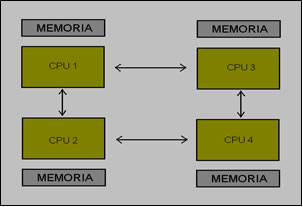

#2 Arquitectura de Memoria Distribuida (Distributed Memory)

La arquitectura de memoria distribuida es un modelo en el que cada procesador o nodo de cómputo tiene su propia memoria local y se comunica con otros nodos a través de mensajes. A diferencia de la arquitectura de memoria compartida, en la que todos los procesadores comparten un espacio de memoria común, en la arquitectura de memoria distribuida cada nodo es responsable de su propia memoria y debe enviar y recibir mensajes para compartir datos entre nodos.
En esta configuración, los nodos trabajan de manera independiente y procesan datos en paralelo. Cada nodo tiene acceso rápido y directo a su memoria local, lo que le permite realizar operaciones de lectura y escritura sin tener que acceder a la memoria de otros nodos. Para compartir datos, los nodos deben intercambiar mensajes a través de una red de comunicación.
La arquitectura de memoria distribuida es especialmente adecuada para aplicaciones que requieren procesamiento distribuido y trabajan con conjuntos de datos más grandes. Cada nodo puede procesar una parte de los datos de manera independiente, lo que permite una escalabilidad eficiente. Además, esta arquitectura puede manejar grandes cargas de trabajo y grandes volúmenes de datos al distribuir la carga de procesamiento entre múltiples nodos.
Uno de los desafíos clave en la arquitectura de memoria distribuida es la coordinación y sincronización de los nodos. Debido a que cada nodo tiene su propia memoria y ejecuta de manera independiente, es necesario establecer mecanismos para garantizar la coherencia y consistencia de los datos compartidos. Los nodos deben comunicarse y coordinar sus tareas para evitar conflictos y asegurar resultados correctos.
La programación en una arquitectura de memoria distribuida puede requerir el uso de bibliotecas y herramientas específicas que faciliten la comunicación y el intercambio de datos entre nodos. Algunos ejemplos populares incluyen el uso de bibliotecas de paso de mensajes como MPI (Message Passing Interface) y modelos de programación distribuida como el paradigma de programación basado en tareas.
En resumen, la arquitectura de memoria distribuida es un modelo en el que cada nodo tiene su propia memoria local y se comunica con otros nodos a través de mensajes. Es especialmente adecuada para aplicaciones que requieren procesamiento distribuido y trabajan con conjuntos de datos más grandes. La escalabilidad, el procesamiento paralelo y la coordinación entre nodos son aspectos clave de esta arquitectura.